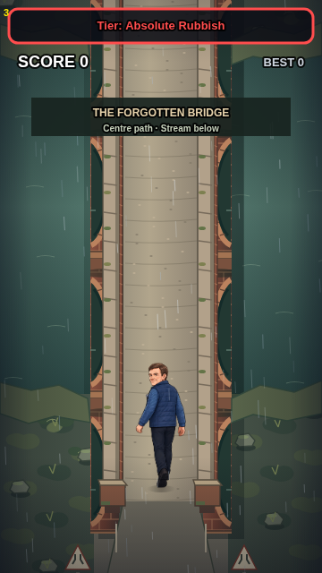

Gary Eats! — Visual Camera Lab
Bridge PR #4 calibration · real 360 × 640 game coordinates · no changes to live gameplay

The overlays are measured geometry. They are not production art. Refine projection values against the actual scene before approving any asset.
1. Source and bridge position
Screenshots are captured from PR #4, not an art sign-off. The game option runs its own actual engine in a debug session.
2. Ground and raised geometry
Projection parameters are provisional. Moving the sliders does not alter the game or the measured 84-unit bridge footprint.
3. Compare and export
The image stays on this device. Match a 360 × 640 crop without letterboxing and adjust the position slider if needed.
Exports are candidates, never automatic approvals. An artist must confirm the preview before locking a profile.
Current source
Camera system instructions · Machine-readable contract · Original PR #4 bridge preview